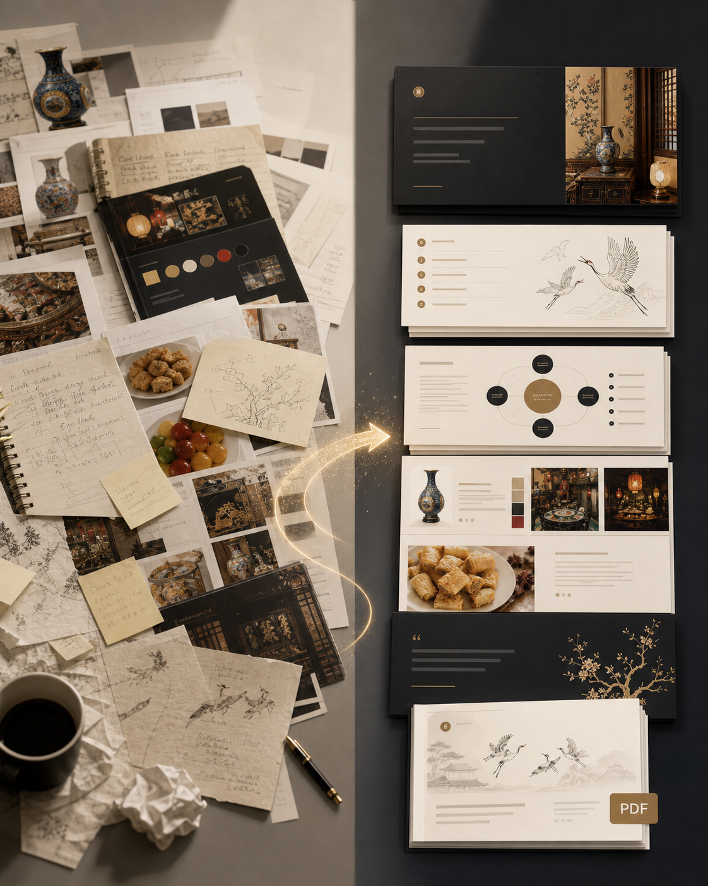
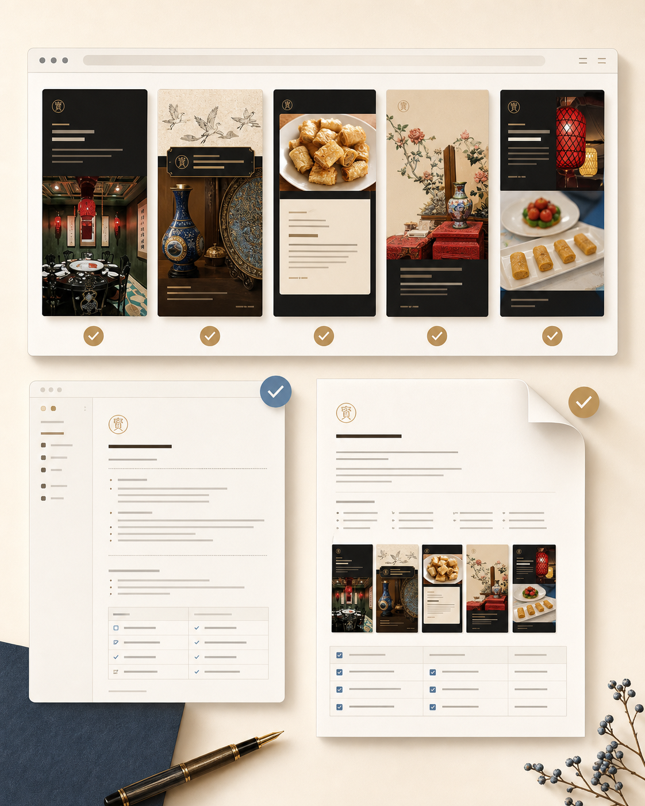

CODEX DESIGN PIPELINE
别再把 Codex 当成 Prompt 工具
真正高效的用法，是把它搭成一条从策略、视觉到排版的设计流水线。
资料诊断 → 策略判断
视觉生成 → 信息排版 → 发布输出
视觉生成 → 信息排版 → 发布输出

认知冲突
Prompt 是一句话，流程是一套系统
普通用法
丢一句需求
让 AI 直接出方案，结果经常像草稿：逻辑散、风格飘、文字还要重修。
工作流用法
拆成多个阶段
每一步都有输入、判断、产物和检查点，最后才进入发布排版。
区别不在工具有多强，而在你有没有把任务拆成可复用的生产链路。

工作流总览
一条可复制的设计生产线
01
资料诊断
读资料，拆目标、受众、渠道、限制和可用素材。
02
策略成型
确定核心观点、内容结构、页表和传播钩子。
03
视觉生成
生成主视觉、质感背景、图形语言和风格方向。
04
排版输出
用 HTML/CSS 固定中文排版，再导出 1080×1350 PNG。

第一步
先做资料诊断，不要急着出图
Codex 的优势，是能先读上下文，再把混乱资料整理成可执行任务。
输入
文章、PPT、PDF、聊天记录、品牌资料、参考图。
判断
这次要解决什么问题，面向谁，输出到哪里。
产物
一句核心观点、3 个标题方向、8 页卡片页表。

第二步
策略先定住，视觉才不会乱飞
A
核心主张Codex 不是 Prompt 工具，而是设计流水线。B
传播钩子把“会用 AI”转成“能稳定产出”。C
页面逻辑冲突、总览、拆解、方法、行动引导。策略页表像施工图。没有它，后面的图片、标题、排版都会各说各话。
第三步
视觉生成只负责氛围，不负责长中文
主视觉可以交给 imagegen，但标题、正文、编号和流程图，建议交给 HTML 排版。
深色背景，高级信息卡，策略工作台质感，强对比大标题，留出中文排版区域，不在图片里生成长中文。
✓
图片负责质感和场景
✓
代码负责中文和层级
✓
截图负责最终发布尺寸
第四步
排版不是美化，是最后一道质量控制
字号
标题足够大，正文控制在每页 3 到 5 个信息块。
层级
每页只讲一个重点，先结论，再解释，再行动。
验证
浏览器真实预览，检查溢出、遮挡、尺寸和可读性。
能被截图、复查、修改，才算真正进入设计工作流。
方法总结
把 Codex 当成设计项目经理
01先诊断资料，不直接出图。
02先锁定策略，不盲目追风格。
03主视觉用生成，中文用排版。
04每次输出都沉淀成可复用模板。
想稳定做出图文，不是多背 Prompt，而是搭一条自己的设计流水线。